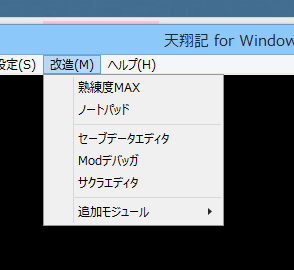

void カスタム::On_アプリケーションメニュー選択時(int メニュー番号) {
}
// 通常、On_起動時等に、メニューを１度追加する。
static int menu1番号 = -1;
static int menu2番号 = -1;
void カスタム::On_起動時() {
menu1番号 = アプリケーション::メニューアイテム追加("熟練度MAX");
menu2番号 = アプリケーション::メニューアイテム追加("ノートパッド");
アプリケーション::メニューアイテム追加("---"); // "---"とすることで、セパレータ（横線）を追加することも出来る。
}
void カスタム::On_アプリケーションメニュー選択時(int メニュー番号) {
デバッグ出力 << メニュー番号 << endl;
// 追加したメニューＩＤと比較することで、お目当てのメニューであることを判定する。
if (メニュー番号 == menu1番号) {
// 532の武将の熟練度をMAXに
for (int i=0; i<最大数::武将情報::配列数;i++) {
p武将情報[i].政治熟練値 = 2000;
p武将情報[i].戦闘熟練値 = 2000;
p武将情報[i].智謀熟練値 = 2000;
}
}
if (メニュー番号 == menu2番号) {
// 外部アプリケーションを実行 (win32api で、ノートパッドを実行)
ShellExecute(NULL, NULL, "notepad.exe", NULL, NULL, SW_SHOWNORMAL);
}
}
